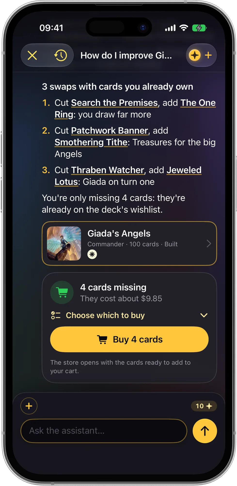

懂你卡牌的魔法風雲會 App
掃描你的魔法風雲會收藏，了解它值多少錢，用手邊的卡牌組指揮官套牌，並記錄每一場對戰。你的 AI 套牌專家 Mote 會根據你的卡牌回答。
即將登陸App Store免費下載 · iPhone 與 iPad · iOS 18 或以上版本
- 卡牌掃描
- 指揮官生命計數器
- 離線規則
- 和好友一起玩
- 14 種語言
- iCloud 同步

ManaPal 實際畫面

用相機掃描卡牌
收藏、套牌和對戰，一個免費 App 全包
不再需要試算表、三個不同的 App，也不用紙筆記生命。ManaPal 把一切集中起來，助理回答前會先看看你的卡牌。
即將登陸App Store- 掃描就知道價值相機一張接一張對準卡牌，它們就會帶著價格連續加入收藏，不必停下來。隨時查看收藏總價值的變化。
- 用手邊卡牌組套牌Mote 用你的收藏組一副指揮官套牌，或分析你的套牌，用你已有的卡牌提出替換建議。
- 找到你的指揮官回答 12 個問題，依平價、中階和頂級清單取得適合你的指揮官，還能匯入在真實比賽中取得名次的套牌。
- 為指揮官打造的計數器2 到 6 名玩家，指揮官傷害、中毒、君主、先攻、Planechase 和 Archenemy。每場對戰都會記入紀錄。
- 和好友一起玩用 QR 碼或連結新增好友：一起玩的對局會出現在每個人的手機上，還有牌友群排行榜。
- 牌桌上的規則完整規則和每張卡牌的官方裁定，離線可用。遇到複雜的互動，「問問 Mote」會給出結論並引用相應規則。
- 看懂套牌的統計魔法力曲線、地、顏色、組合技、起手機率、套牌價值和缺少卡牌的費用。
- 預組套牌與試玩每副官方預組套牌都附有介紹。套上牌套之前，先試玩一局，看看套牌的抽牌表現。
- 帶著你的卡牌過來可從 ManaBox、Moxfield、Archidekt、Delver Lens、Dragon Shield、Deckbox、TCGplayer 或 Cardmarket 匯入，並透過 iCloud 同步。
永久免費：收藏、價格、掃描、對戰，以及最多 7 副自組套牌。AI 功能使用 Mana，每次操作前都會先顯示費用：每天一次免費快速提問，第一次「找到你的指揮官」也免費。ManaPal Pro 為選用項目：每月 Mana、進階統計，以及無限套牌、卡冊和試玩。
使用方式
從一盒卡牌到桌上的套牌，只要四個步驟。
新增卡牌
用相機掃描、依名稱或系列搜尋，或從其他 App 匯入清單。
組建或匯入套牌
自己建立套牌，從 Moxfield、Archidekt 或文字清單匯入，或讓 Mote 用你的收藏來組。
問問 Mote
規則問題、套牌分析、用你自己的卡牌替換。開始前會先顯示所需 Mana。
對戰並記錄
打開計數器開始對戰，每個結果都會計入你的紀錄和牌友排行，並同步到好友的手機上。
常見問題
ManaPal 是免費的嗎？
是的。ManaPal 可免費下載，收藏、價格、掃描、系列、預組套牌和生命計數器永久免費，還能免費組建最多 7 副套牌。AI 功能使用 Mana：每天有一次免費的 AI 快速提問，第一次「找到你的指揮官」也免費。ManaPal Pro 為選用項目，提供每月 Mana、進階統計，以及無限套牌、卡冊和試玩。 了解更多（英文）
ManaPal 能掃描魔法風雲會卡牌嗎？
可以。把 iPhone 相機對準卡牌，ManaPal 就會辨識卡牌、顯示價格並加入你的收藏。你可以選擇系列、標記為閃卡，然後繼續掃描。 了解更多（英文）
怎麼知道我的魔法風雲會收藏值多少錢？
透過掃描或匯入清單把卡牌加入 ManaPal，收藏畫面會依最新價格顯示總價值，以及它隨時間的變化。 了解更多（英文）
ManaPal 能用我現有的卡牌組指揮官套牌嗎？
可以。使用「用我的卡牌幫我組一副套牌」，Mote 會優先使用你收藏中的卡牌，組出一副 100 張的指揮官套牌，並列出缺少的幾張。 了解更多（英文）
要怎麼選擇適合自己的指揮官？
從你喜歡的獲勝方式、喜歡的顏色和預算開始。ManaPal 的「找到適合你的指揮官」測驗會問 12 個問題，並依平價、中階和頂級清單推薦指揮官。 了解更多（英文）
指揮官套牌需要幾張地？
大多數指揮官套牌使用 36 到 38 張地，再加上約 10 張加速。曲線低可以少放一些，昂貴咒語多就要多放。ManaPal 會顯示地的數量、魔法力曲線和起手機率。 了解更多（英文）
ManaPal 有可記錄指揮官傷害的生命計數器嗎？
有。計數器支援 2 到 6 名玩家，可記錄指揮官傷害、中毒指示物、君主、先攻、Planechase 和 Archenemy，並把每場對戰存進統計。 了解更多（英文）
可以從 ManaBox 或 Moxfield 匯入我的收藏嗎？
可以。ManaPal 可從 ManaBox、Moxfield、Archidekt、Delver Lens、Dragon Shield、Deckbox、TCGplayer 和 Cardmarket 的 CSV 檔案匯入收藏，也可從 Archidekt、Moxfield、ManaBox、MTG Arena 或純文字清單匯入套牌。 了解更多（英文）
ManaPal 能回答魔法風雲會的規則問題嗎？
可以。官方完整規則和每張卡牌的官方裁定都內建在 App 中，離線也能使用，你還可以同時查詢多張卡牌，看看它們如何互動。遇到複雜的互動時，「問問 Mote」會閱讀規則和裁定，給出結論並附上所依據的規則。在比賽中，最終仍以裁判的判定為準。
可以在 ManaPal 裡和好友一起玩嗎？
可以。建立免費的線上個人檔案，透過 QR 碼、連結或好友代碼新增好友，一起玩的對局就會出現在每個人的手機上，還能查看牌友群的統計。 了解更多（英文）
我的卡牌和套牌存在哪裡？
存在你的裝置和你自己的 iCloud 中，並在 iPhone 與 iPad 之間同步。我們看不到，也不會出售這些資料。 了解更多（英文）
ManaPal 是威世智（Wizards of the Coast）的官方 App 嗎？
不是。ManaPal 是依據粉絲內容政策（Fan Content Policy）獲准的非官方粉絲內容，未經威世智（Wizards of the Coast）認可或背書。 了解更多（英文）

把你的卡牌帶上牌桌
ManaPal 即將登陸 App Store，支援 iPhone 與 iPad。掃描第一批卡牌，組好下一副指揮官套牌，計算的事就交給 Mote。
即將登陸App Store